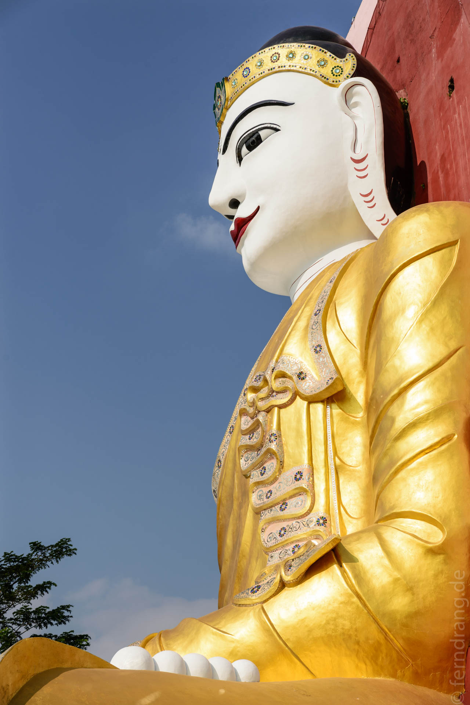
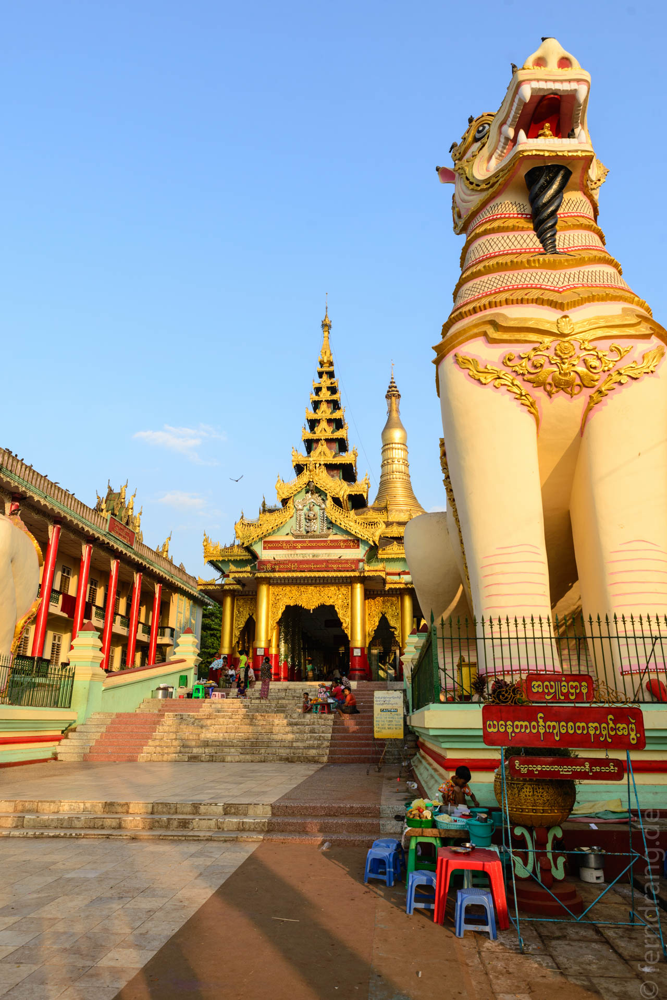
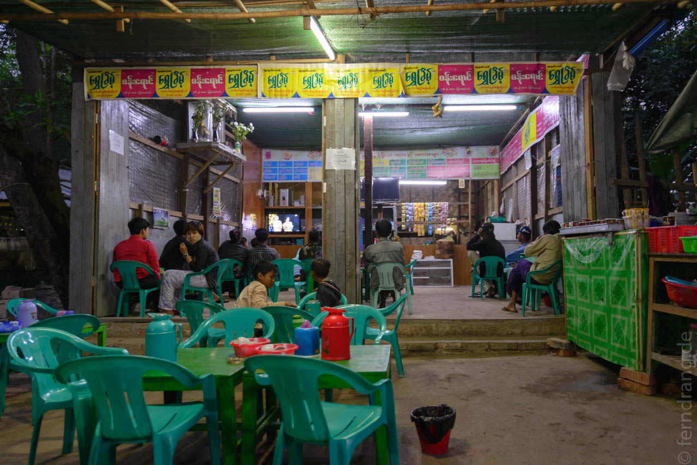
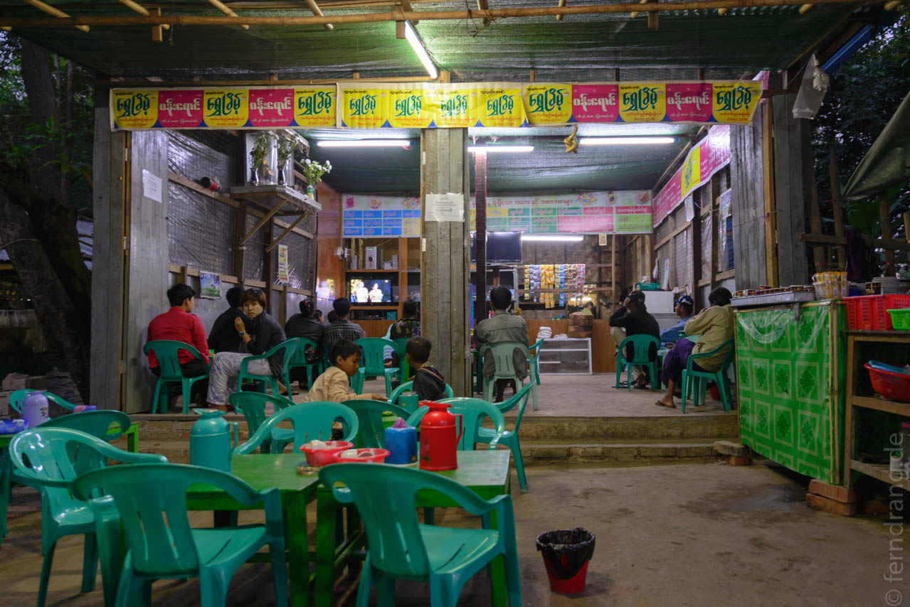

28. Dezember 2013
Bago
Nach Bago sind wir (über Yangon) wieder mit Myanma Airways geflogen – und haben wieder überlebt. Der Flug ging später los, wegen schlechter Sicht. Unser Taxi-Fahrer hatte uns das schon prophezeit, als er uns an der Stelle, wo letztes Jahr ein Flugzeug verunglückt war, aufgemuntert hat: "Very good luck" – es gab nur einen Toten.
Dafür sind wir schneller als gedacht von Yangon nach Bago gekommen. Die Straße ist fast so etwas wie eine Autobahn: Komplett mit Hütten bebaut, Fahrräder im Gegenverkehr, Trecker, Rikschas, kreuzende Fußgänger. Sechs Spuren Fahrvergnügen – also bei Bedarf acht Autos nebeneinander.
Autobahn ist auch das alles beherrschende Motiv in Bago. Die mächtige Straße versorgt die langgezogene Stadt mit einer endlosen Walze aus Lärm und Smog. Drum herum arrangiert sich Bago mit Wegen, die Rabatten aus Müll säumen. In der Dreckliga wird auf indischem Niveau gespielt. Der Reiseführer (Stefan Loose, nicht zu empfehlen) schlägt Radfahren als das "optimale Fortbewegungsmittel" vor. Wir haben es ausprobiert und sind anderer Meinung.
Die Attraktionen des Ortes sind die zahlreichen aber weitestgehend glanzlosen Tempel und heiligen Stätten. Da gibt es einen großen liegenden Buddha in einer Halle mit Bahnhofsatmosphäre. Hundert Meter weiter wurde erst neulich – gute Idee! – ein noch größerer liegender Buddha gebaut. Dann noch eine echt große, goldene Stupa (Landeshöhenrekord), haushohe Buddha-Gesichter und die Schlangen-Pagode. Letztere liegt malerisch hinter einer Müllkippe und beherbergt einen meterlangen, fetten Python, so dick wie ein Oberschenkel, dem gespendete Geldscheine in glückbringender Weise auf den Leib gelegt werden.
 Unser Hotel Bago Star liegt glücklicherweise etwas außerhalb und – eine Seltenheit in Bago – etwas abseits der allgegenwärtigen Hauptstraße. Das Restaurant ist ein skurriler Speisesaal voller Nippes und Ölgemälden, die Mona Lisa hängt über einem Waschbecken. Der schläfrige Hotelbursche, das Fehlen anderer Gäste, der unter einer Decke versteckte Stapel Wasserflaschen (ausreichend für Jahre) – alles nicht viel versprechend. Doch in der Nähe gab es nichts anderes. Also rein und... Überraschung: Das Essen war exzellent!
Später haben wir doch noch etwas in der Nähe gefunden. In derselben Straße liegt auch der Tempel mit den haushohen Gesichtern. Und Tempel ziehen Leute und Leute Teestuben an. Wir haben die kleine Teestube durch unsere Anwesenheit völlig aufgemischt. Da musste der beste Stuhl her, extra viel Soße zu den Samosas, Mückenspiralen, mehr Tee, mehr Mückenspiralen, Krabben-Chips ("present, no pay!")... wir wurden sehr niedlich umsorgt. Mit den Einheimischen haben wir uns dann die myanmarischen Acadamy-Awards reingezogen. Die prämierten Filmausschnitte waren furchtbar, aber die Gala wurde mit viel Glanz durchgeführt und die Zeitungen waren später voll von tränenreichen Jubel-Bildern.
 
